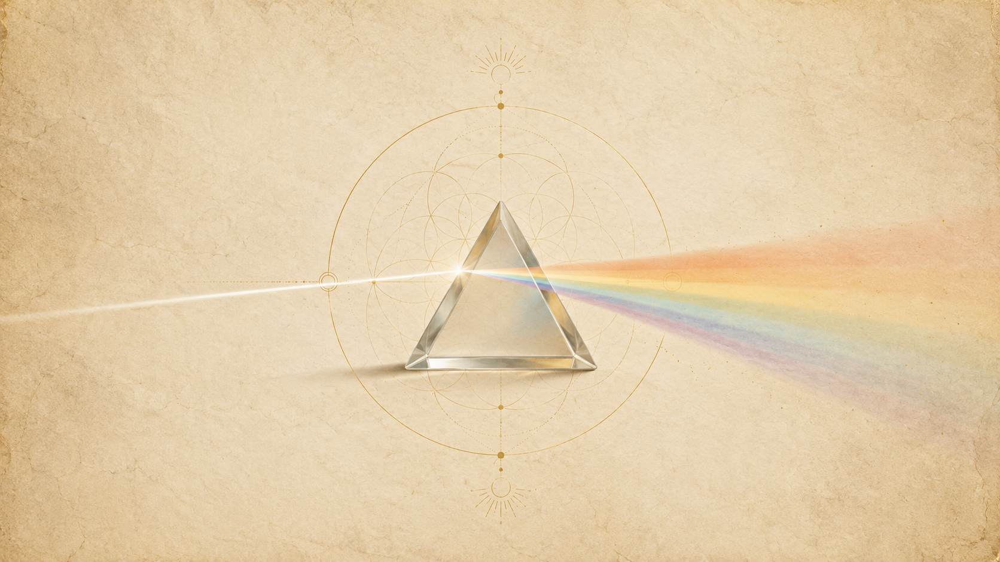
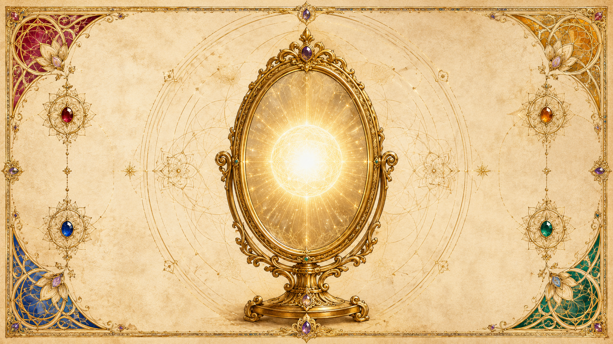
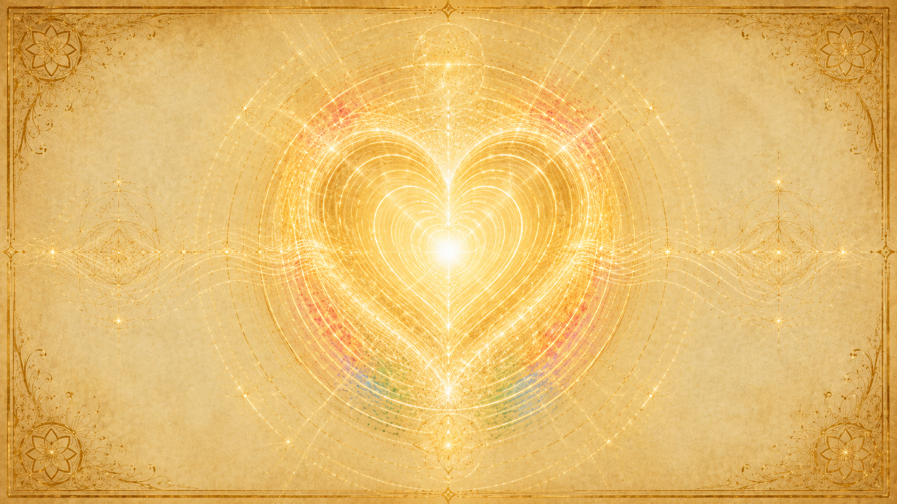

一的法則是什麼:萬物為一,分離只是表象
「萬物、一切生命、整個造物,都是同一個最初思維的一部分。」

Ra 在第一次接觸時(第 1 場)就把整套教材的底牌攤開:「萬物、一切生命、整個造物,都是同一個最初思維的一部分。」這不是七十多場集會慢慢推導出來的結論,而是一開始就講明的前提——後面所有內容,都是這一句的展開與細節。(這個「最初思維」如何發生,屬於造物起源,詳見「最初的思維」章。)
無限不可能是「多」
當提問者追問什麼是一的法則,Ra 給了它形上學的根:「那無限的,不可能是『多』,因為『多重性』是一個有限的概念。」既然造物的本源是無限,它就無法被切成許多互相分離的東西;表面上的萬千差異,只是同一個無限在折射。Ra 用稜鏡作比:陽光通過稜鏡分出所有顏色,而那些顏色「全都源自同一道陽光」——祂說這是「合一的一個簡化示例」。彩虹看起來有七色,但七色從來不是七個獨立的東西。
分離是「被選擇的」,不是必然
Ra 特別點出:我們所經驗到的「分離感」並非宇宙的真相,而是一種扭曲——而且是被選擇的扭曲。祂說:「這個扭曲在任何情況下都不是必要的。它是你們每一個人所選擇的,作為理解『那綁住萬物的、完整的思維合一』之外的另一條替代道路。」換句話說,合一才是底層事實;分離只是我們暫時選來體驗的鏡頭。
沒有對錯,只有「同一」
到了第 4 場,提問者直接請 Ra 把一的法則用一句話說清楚。Ra 的回答是這套教材最常被引用的定義之一:「萬物為一,沒有極性,沒有對與錯,沒有不和諧,只有同一(identity)。」這裡出現本章兩個反覆出現的關鍵詞:一是「萬物為一」,二是「只有同一」——所有看似不同、對立、衝突的,本質上是同一個存有在跟自己互動。
「你即是萬事萬物、每個存有、每個事件」
第 1 場裡,Ra 把「萬物為一」翻譯成第二人稱、直接對著讀者說的一段話。這段話是整套教材的情感核心,值得逐字看:
「你是每一樣東西、每一個存有、每一種情緒、每一個事件、每一個處境。你是合一。你是無限。你是 愛/光、光/愛。你『是』(You are)。這就是一的法則。」

它在說什麼
這不是修辭上的誇張。Ra 的意思是字面的:既然只有一個存有,那麼此刻讀著這段話的「你」,與你眼前的他人、你所經歷的每件好事壞事、你最厭惡的那個對象,在最深的層次上是同一個存在。你不是「宇宙裡的一個小部分」,你『就是』那個正在以無數面孔體驗自己的造物者。每一個其他自我、每一個事件,都是同一個你的另一個側面。
從觀念變成練習
這句話不只是用來理解的,它可以直接拿來操練。第 10 場提問者請 Ra 給能加速朝向一的法則前進的練習,Ra 給了四個,核心全都是同一件事——在每個地方認出造物者:
練習一:「這一刻包含著愛。這就是這個幻象(密度)的功課與目標。」有意識地在當下尋找愛。
練習二:「宇宙是『一個存有』。當一個心/身/靈複合體看著另一個心/身/靈複合體時,看見造物者。」
練習三:「凝視鏡中。看見造物者。」
練習四:「凝視環繞在每個存有四周的造物。看見造物者。」
四個練習其實是把「你即是萬物」拆成四個方向:在當下、在他人、在自己、在世界裡,都認出同一個造物者。Ra 強調這些練習的前提,是某種「靜心、冥想或祈禱」的傾向——也就是要先靜下來,才看得見。
三個扭曲:自由意志、愛、光,如何從合一展開
如果萬物本是完美的合一,那麼我們所經驗的這個五光十色、有時間有空間有對立的世界,是怎麼來的?Ra 的答案是「扭曲(distortion)」這個詞。注意:在 Ra 的用法裡,「扭曲」不是貶義,不是「錯誤」;它只是指「合一被以某種方式聚焦、偏折,因而顯化出可被經驗的東西」。一的法則本身完美無瑕,而為了能「被體驗」,它必須先發生第一道偏折。
第一扭曲:自由意志
第 15 場,提問者問這些扭曲之間有沒有先後順序,並提到自由意志是「第一扭曲」。Ra 確認並給出完整的展開序列:「第一扭曲,自由意志,找到了焦點。這就是你們所知的第二扭曲——『理則(Logos)』,即造化原理,或稱『愛』。這個智能能量於是創造出一個被稱為『光』的扭曲。」
第一道偏折是「自由意志」:無限的造物者賦予自己「自由地認識自己」的自由。萬有選擇要去體驗、去認識自己——這個「選擇去經驗」本身,就是合一的第一個扭曲。沒有自由意志,就沒有後面的一切;它是其餘所有扭曲的源頭。(本章只談它作為「法則的第一道展開」;它在演化中怎麼運作——遺忘之幕、混淆法則、不請自來即是侵犯——詳見「抉擇與兩條道路」章。)
第二扭曲:愛(理則 / Logos)
自由意志一旦「找到焦點」,就成為第二扭曲——「愛」,也就是 Logos、造化原理。這裡的「愛」不是情緒,而是那股「決定要創造、要塑形」的力量。第 27 場 Ra 把它說得更精確:「愛……使智能能量,以如此這般的方式,從智能無限的潛能中被形成。」也就是說,愛是那個「決定要怎麼造」的聚焦動作:它從無限的潛能裡,雕出特定的法則、特定的宇宙樣貌。每一個 Logos(造物之神)就是一份特定的「愛」,用自己的方式去塑造它那一片造物。
第三扭曲:光
愛聚焦之後,顯化出第三扭曲——「光」。Ra 在第 27 場確認:純粹的振動造出光的粒子(光子),光子再凝聚成物質;七種顏色的分類,正是「愛的聚焦施加在原初的光/物質上」的結果。光是「愛被顯化出來」的那一面——它是造物得以成形的材料。Ra 對「愛/光」與「光/愛」的區分很關鍵:「愛/光是賦能者、是力量、是能量的給予者;光/愛則是當光被愛烙印之後所發生的顯化。」愛是動力,光是成品。
三個扭曲再生出無數扭曲
Ra 接著說:「從這三個扭曲,生出許許多多的扭曲階層,每一個都有自己的悖論要被綜合,沒有任何一個比另一個更重要。」整個複雜的宇宙——所有密度、所有定律、所有經驗——都是這三道初始偏折繼續折射、層層展開的結果。但無論折射多少層,源頭永遠是那同一個合一。
為何一切其他教導,都只是這條法則的「扭曲」或「支流」
Ra 對自己這套教材的定位,謙卑到近乎激進:它不認為自己在傳授一套新宗教或新哲學,而認為一切真正的靈性教導——古往今來各種法門、各種名相——全都是「一的法則」的扭曲版本,或者說,是流向同一條大河的支流。
連「分離」這件事本身,都是法則的一個扭曲
前面說過,Ra 把我們經驗到的分離感稱為「一的法則的一個扭曲」(第 1 場)。這句話的份量在於:它把「我們以為的現實」整個收編進法則底下。不是「有合一,另外還有一個分離的世界」;而是「只有合一,而分離是合一的一個折射」。同理,自由意志、愛、光這三個最根本的原理,Ra 也明白稱之為「對一的法則的扭曲」。連這套教材最核心的三大支柱,都被定位成「法則的扭曲」——可見在 Ra 眼中,法則之上再無他物。
所有教導都是同一條法則的不同折射
既然萬物為一、無一物在法則之外,那麼任何一套講述「愛」、講述「合一」、講述「服務」、講述「療癒」的教導,本質上都只是在用不同語言、不同切面,逼近同一條法則。它們彼此不矛盾,只是折射的角度不同、清晰程度不同。Ra 用「扭曲階層」來形容:從三個扭曲生出「許許多多的扭曲階層」,每一個都有自己的悖論要綜合,而「沒有任何一個比另一個更重要」(第 15 場)。沒有哪一條支流比別條更高級——它們都通向同一片海。
為什麼 Ra 不斷說「我們可能說得不準」
正因為一切語言都是扭曲,Ra 在集會中反覆聲明自己的回答也只是「在扭曲中的最佳近似」。它不把自己的話當成終極真理,而當成「指向法則的又一條支流」。這份謙卑本身就是一的法則的體現:既然萬物為一,那麼「我說的」與「你體會的」也是同一個造物者在對話,沒有誰站在更高的位置頒布真理。
這條法則對日常生活與倫理的意涵
「對他人做的,就是對自己做的。」——因為他人本來就是自己。
「萬物為一」如果只是一個漂亮的形上學命題,那它沒什麼用。Ra 真正在意的,是它落到日常生活與待人接物時會變成什麼。答案出乎意料地具體。
對他人即是對自己
這是一的法則最直接的倫理推論:既然你即是每一個其他存有,那麼你對任何人做的事,在最深的層次上,就是對自己做的。傷害他人就是傷害自己,服務他人就是服務自己——這不是道德勸說,而是一個結構性事實。第 10 場的四個練習裡,「在他人身上看見造物者」之所以排在前面,正因為它是把這條法則用在人際關係上的核心操作:你眼前這個人,就是另一個面貌的你,也是造物者本身。
沒有對錯,只有覺察程度的不同
Ra 一再強調:在一的法則之下「沒有對與錯,沒有不和諧」(第 4 場)。第 12 場有一個極簡卻極有力的交換:提問者問,如果他去抓住某個負面實體,這樣做會不會違反一的法則、會不會是「犯了錯」。Ra 只回了一句:「在一的法則之下,沒有錯誤。」
這句話容易被誤解成「怎麼做都無所謂」,但 Ra 的意思更精準:在合一的層次上沒有「對錯」這種二分,只有不同程度的「覺察」。一個傷害他人的行為不是「錯」,而是「尚未認出對方就是自己」的低覺察狀態;一個充滿愛的行為不是「對」,而是「已經認出萬物為一」的高覺察狀態。倫理的進展,不是從「做錯」走向「做對」,而是從「較少覺察」走向「較多覺察」。判斷因此失去意義——你無法評判別人,因為對方只是處在不同的覺察程度,而那也是同一個造物者的一段體驗。
療癒:認出「本來就完整」
這條法則連療癒都重新定義了。第 4 場 Ra 說:「療癒發生於,當一個心/身/靈複合體在自身深處體認到一的法則時——也就是體認到沒有不和諧、沒有不完美;一切都是完整的、整全的、完美的。」療癒不是「修好一個壞掉的東西」,而是「想起自己從未真正壞過」。療癒者的角色,Ra 說,只是「這個完全屬於個人的過程的賦能者或催化劑」——他不能替你療癒,只能幫你想起你本就是完整的合一。
古埃及的教訓:扭曲如何發生
Ra 也用自己的歷史說明這條倫理為何難守。它曾在古埃及試圖教導一的法則,結果教導被扭曲成階級與崇拜——人們把「萬物為一」聽成了「有些人更接近神」,反而強化了分離。這個失敗讓 Ra 學到:任何把法則包裝成「菁英、權威、階級」的傳遞方式,都背叛了法則本身。倫理上,這意味著真正活出一的法則,是徹底地不把任何人放在自己之下或之上。
合一法則無法被證明,只能被體驗
一的法則有一個關鍵性質:它不是一個可以用邏輯論證、實驗檢驗的命題。它無法被「證明」,只能被「體驗」。理由本身就藏在法則裡。
證明需要「兩個東西」,但只有一個存有
任何「證明」都預設了主體與客體的分離——一個觀察者,去驗證一個被觀察的對象。但一的法則說的恰恰是「沒有分離,只有同一個存有」。當你想證明合一時,你已經把自己擺在「合一」之外、當成一個分離的觀察者,這個動作本身就否定了你要證明的東西。所以合一無法從外部被證明;它只能由你「成為它、認出你本就是它」來體認。Ra 在第 1 場給的不是論證,而是一句邀請式的斷言:「你『是』。這就是一的法則。」——祂沒有要說服你,祂在請你認出。
它存在於「體認」之中,而不是「理解」之中
第 4 場談療癒時,Ra 用的詞是「在自身深處體認到(realizes deep within itself)」一的法則,而不是「在智識上理解」。這個區別貫穿整套教材:智識上的理解屬於更高密度,而第三密度真正能做的,是「體認」——一種比理解更深、靠經驗與存在去抵達的「想起」。你可以讀懂這一整章每一個字,卻仍未「體認」到合一;反過來,一個從未聽過 Ra 的人,也可能在某個靜默的瞬間「體認」到萬物為一。法則的真偽,不在書頁上裁決,而在體驗裡揭曉。
但這條路是普世的、人人可走的
無法被證明,不代表它隱晦難及。Ra 確認朝向第八密度(回歸合一)的演化進程是「普世的」——對所有存有皆然(第 16 場)。每一個存有,無論覺察與否,都正走在回到合一的路上。法則不需要你相信它才生效;它只是等著被你親自體驗到。前一節提到的四個練習(在當下、他人、自己、世界裡看見造物者),正是 Ra 給的「體驗法則」的具體入口——不是去想通它,而是去看見它。
一的法則與「智能無限」的關係
「有合一。這個合一就是一切的存在。」
如果問「一的法則裡,那個『一』指的究竟是什麼」,Ra 給的名字是「智能無限(intelligent infinity)」。理解這個詞,就理解了法則所說的「一」到底是什麼。

智能無限就是那個「一」
第 27 場,提問者請 Ra 把智能無限當成「單一概念」來定義。Ra 的回答把整章串了起來:「有合一。這個合一就是一切的存在。這個合一有一個潛能與一個動能。那潛能,就是智能無限。」也就是說,智能無限不是合一之外的另一樣東西——它『就是』合一在「尚未顯化、純粹潛能」狀態下的名字。一的法則所說的「一」,在最根本的、未被任何扭曲觸碰的層次,就是智能無限。
沒有扭曲的純粹節律
Ra 形容智能無限「有一種節律或流動,如同一顆巨大的心臟」,向外與向內運動,直到圓滿。它本身「完全沒有扭曲」——在合一之中「沒有潛能與動能的差別」,它的基本節律是徹底無扭曲的。前面講的三個扭曲(自由意志、愛、光),全都是在智能無限「這個未扭曲的本源」上發生的偏折。所以順序是:智能無限(純粹的一)→ 自由意志聚焦 → 智能能量(被愛塑形的能量)→ 光 → 整個顯化的宇宙。
智能無限 vs 智能能量
Ra 區分兩個容易混淆的詞:「智能無限」是那未顯化的潛能(就是合一本身);而「智能能量」是智能無限被「愛」聚焦之後形成的、會塑造出特定造物的能量。第 27 場 Ra 說,愛「使智能能量,從智能無限的潛能中,以如此這般的方式被形成」。簡單說:智能無限是源頭的「一」,智能能量是它開始「造東西」時的那股動力。(這股能量如何流經各密度、各能量中心而造出宇宙萬象,屬於宇宙結構,詳見「宇宙論」章。)
觸及智能無限,就是回到法則
這也解釋了 Ra 為何把「與智能無限接觸」當成靈性修練的終極目標。第 4 場談心/身/靈三方面的修練時,Ra 說靈的功能是「整合心/身能量向上的渴求,與智能無限向下的傾注與流入」。修行的方向,說到底就是讓自己重新接通那個未扭曲的本源——也就是親自體認到「萬物為一」。智能無限是法則的本體,接觸它,就是回到一。